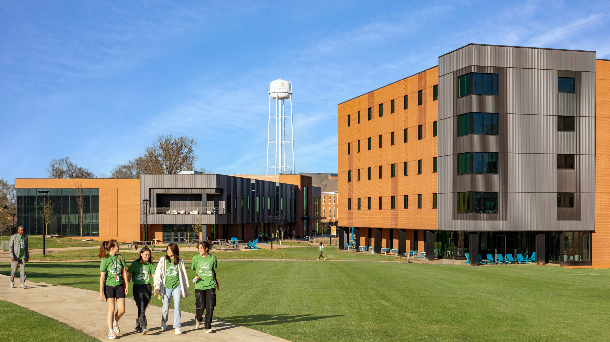

Where knowledge meets compassion.
Trinity Memorial University is a leading institution dedicated to academic excellence, research innovation, and community engagement.
OUR STORY
In the heart of Africa, where wisdom flows through generations and purpose runs deep like the roots of the baobab tree, Trinity Memorial University (TMU) was born a divine vision turned reality.
This is not just a university. It’s a sacred ground where tradition meets innovation, where faith walks hand-in-hand with knowledge, and where every student is seen as a seed of greatness waiting to rise.
Founded on the principles of excellence, character, and divine purpose, TMU stands as a light in a world that longs for truth and transformation. Our mission is clear: to raise bold, brilliant minds scholars with spirit, leaders with vision, and citizens of the world who carry Africa’s heartbeat in all they do.
We believe that true education is more than a degree. It’s a calling. A calling to rise, to serve, to lead in our homes, our communities, our continent, and beyond. Our classrooms echo with curiosity. Our halls carry dreams. And our legacy? It’s being written every day by students who dare to believe in something greater than themselves.
At Trinity Memorial University, we honor our roots while reaching for the skies. We are grounded in faith. Driven by excellence. And united by a passion to build a better tomorrow starting today.
TMU Raising Africa's future. Honoring God. Inspiring the world.

OUR VISION
At Trinity Memorial University, where we offer highly affordable programs, we are committed to fostering a diverse and inclusive environment that nurtures innovation and creativity. as well as To be a world-class university committed to excellence in education, research, and innovation raising leaders who will transform their communities and the world.